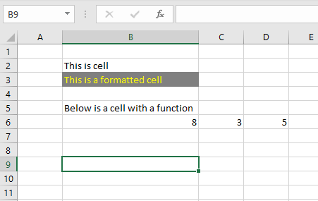

3 Storing data in spreadsheets
I previously mentioned spreadsheets like those created in Excel. These are indeed great, but not great for reproducible science or data analysis. This is because they are not easily documented and scripted. The data is actually part of the analysis. Another danger with spreadsheets (like MS Excel) is that it re-formats your data. This is such a big problem for scientists that we have apparently started renaming genes in order to avoid confusion.
Errors are frequent in spreadsheets, not only because of renaming (Ziemann, Eren, and El-Osta 2016), but also because of bad formatting of formulas (Stephen, Kenneth, and Barry 2009). These are both reasons for using spreadsheets only for what they do best: data input and data storage.
Think about the literature Broman and Woo (Broman and Woo 2018) gives several pointers on how to use spreadsheets for data input and storage. Think about your experince with Excel, what is the most common mistake you made when handling data in spreadsheets?
Although data storage and data input are great ways to use spreadsheets, it’s good to know a little about the capabilities of your spreadsheet software.
3.1 Cells and simple functions
A spreadsheet consists of cells, these can contain values, such as text, numbers, formulas and functions. Cells may also be formatted with attributes such as color or text styles. Below is an example of some data entered in a spreadsheet.
Cell B6 contains a simple formula: = C6 + D6. This formula adds cells C6 and D6 resulting in the sum, 8. In formulas, mathematical operators can be used (\(+, -, \times , \div\) ). Formulas can be also extended with inbuilt function such as showed in @ref(tab:excel-functions).
| Function | English | Norwegian |
|---|---|---|
| Sum | SUM() |
SUMMER() |
| Average | AVERAGE() |
GJENNOMSNITT() |
| Standard deviation | STDEV.S() |
STDEV.S() |
| Count | COUNT() |
ANTALL() |
| Intercept | INTERCEPT() |
SKJÆRINGSPUNKT() |
| Slope | SLOPE() |
STIGNINGSTALL() |
| If | IF() |
HVIS() |
The sum, average and standard deviation and count are simple functions for summarizing data. Intercept and slope are both examples of functions used to get simple associations from to sets of numbers (based on a regression model). The if function is an example of a function that can be used to conditionally enter data in a cell. For example, IF cell A1 contains a certain number, then cell B1 should display another a specified text.
When looking for tips and tricks online, you may come across functions for excel in other languages than what is installed on your computer. To translate functions, and for a full overview of functions included in Microsoft Excel, see this website en.excel-translator.de/.
3.2 Tidy data and data storage
Hadley Wickham uses a quote from Tolstoy when describing the principle of tidy data (Wickham 2014). This quote is so famous that it has given name to a principle. The principle in turn comes in many variants but basically states that when something goes wrong, it can be wrong in multiple ways. But when it is right/correct/works/succeeds, it does so in only one way1. This principle can be applied to data sets. There are so many ways that formatting of data sets can be problematic, but a limited sets of principles makes it good.

A tidy data set consists of values originating from observations and belonging to variables. A variable is a definition of the values based on attributes. An observation may consist of several variables (Wickham 2014).
A tidy data set typically has got one observation per row and one variable per column. Let’s say that we want to collect data from a strength test. A participant (participant is a variable) in our study conducts tests before and after the intervention (time is a variable) in two exercises (exercise is a variable) and we record the maximal strength in kg (load is a variable). The data set will look something like in the table below (@ref(tab:tidy-data-example)).
| Participant | Time | Exercise | Load |
|---|---|---|---|
| Bruce Wayne | pre | Bench press | 95 |
| Bruce Wayne | post | Bench press | 128 |
| Bruce Wayne | pre | Leg press | 180 |
| Bruce Wayne | post | Leg press | 280 |
Another example contains variables that actually carries two pieces of information in one variable. We again did a strength test, this time as maximal isometric contractions and in each test consisted of two attempts. We record this in two different variables, attempt 1 and 2. The resulting data set could look something like in Table @ref(tab:tidy-data-example-2).
| Participant | Time | Exercise | Attempt1 | Attempt2 |
|---|---|---|---|---|
| Selina Kyle | pre | Isometric | 81.3 | 92.5 |
| Selina Kyle | post | Isometric | 97.1 | 114.1 |
To make this data set tidy we need to extract the attempt information and record it in another variable as seen in Table @ref(tab:tidy-data-example-3).
| Participant | Time | Exercise | Attempt | load |
|---|---|---|---|---|
| Selina Kyle | pre | Isometric | 1 | 81.3 |
| Selina Kyle | pre | Isometric | 2 | 92.5 |
| Selina Kyle | post | Isometric | 1 | 97.1 |
| Selina Kyle | post | Isometric | 2 | 114.1 |
This naturally gives additional rows to the data set. This is sometimes referred to as “long format” data as opposed to the structure where each attempt is given separate variables, something that is called “wide format”. You will notice during the course that for most purposes, the long format is most convenient. This is true when we create graphs and do statistical modelling. But sometimes a variable needs to be structured in a wide format to allow for certain operations.
If we follow what is recommended by Broman and Woo (Broman and Woo 2018), it is clear that each cell in a spreadsheet should only contain one value. If we for example decide to format a cell to a certain color, we add data to that cell on top of the actual data. You might add color to a cell in order to remember to add or change data. However, when you use the data set in other software, this information is lost. You should instead add another variable to allow for such data to be properly recorded. Using a variable called comments you can add text thta actually describes some information about that particular observation, information that is not lost when you use the data set in another software.
3.3 Recording data
A trade secret2 from people who work all day with data and programming is that they are lazy. Lazy in the sense that you do not want to type too much, and absolutely not use the computer mouse when it can be avoided. When recording data we can try to be lazy to. We can do this by shortening variable names and not e.g. using CAPITAL letters when entering text in data storage. After a hard day at the keyboard, you will be happy to write strtest instead of Strength Test. The extra effort of using two capital letters might be the thing to tip you over the edge3. However, we should not be too lazy either, variable names and values should “short, but meaningful” (Broman and Woo 2018).

Data and variables should also be consistent. Do not mix data type, use a consistent way of entering e.g. dates and time, do not uses spaces or special characters. To enforce this you might want start your data collection with writing up a data dictionary that describes all variables you are collection. The dictionary can set the rules for your variables. This dictionary can also guide your data validation.
In Excel, data validation can be used to set rules for data entry. For example, if you have a numeric variable, you can set Excel only to accept numbers in specified set of cells. This makes it harder to enter erroneous data.
3.4 Saving data
Data from spreadsheets can be saved as special spreadsheet files, such as .xlsx. This format allows for functions, multiple spreadsheets in the same file (tabs) and cell formatting. If you follow the tips described above and in (Broman and Woo 2018) you do not need this fancy format. Instead you can store your data as a .csv file. This format may be read and edited with Excel (or another spreadsheet software) but also in a plain text editor. Data entered in this format (comma-separated values; csv) can look like this in a text editor:
Participant;Time;Exercise;Attempt;load
Selina Kyle;pre;Isometric;1;81.3
Selina Kyle;pre;Isometric;2;92.5
Selina Kyle;post;Isometric;1;97.1
Selina Kyle;post;Isometric;2;114.1This is actually quite nice. The data takes little space, the simple format requires that data is well documented using e.g. a data dictionary and it is available for many other softwares as the format is simple. The data can be documented using a README file that could describe the purpose and methods of data collection, how the data is structured and what kind of data the variables contains. A simple README file can be written in a text editor such as Notepad and saved as a .txt file. Later in this course we will introduce a “markup” language often used to create README files containing a syntax that formats the text to a more pleasant style when converted to other formats.
3.5 References
Broman, Karl W., and Kara H. Woo. 2018. “Data Organization in Spreadsheets.” Journal Article. The American Statistician 72 (1): 2–10. https://doi.org/10.1080/00031305.2017.1375989.
Stephen, G. Powell, R. Baker Kenneth, and Lawson Barry. 2009. “Errors in Operational Spreadsheets.” Journal Article. Journal of Organizational and End User Computing (JOEUC) 21 (3): 24–36. https://doi.org/10.4018/joeuc.2009070102.
Wickham, Hadley. 2014. “Tidy Data.” Journal Article. Journal of Statistical Software; Vol 1, Issue 10 (2014). https://www.jstatsoft.org/v059/i10.
Ziemann, Mark, Yotam Eren, and Assam El-Osta. 2016. “Gene Name Errors Are Widespread in the Scientific Literature.” Journal Article. Genome Biology 17 (1): 177. https://doi.org/10.1186/s13059-016-1044-7.
See https://en.wikipedia.org/wiki/Anna_Karenina_principle↩︎
A trade secret as in “not generally known to the public”. See en.wikipedia.org/wiki/Trade_secret.↩︎
In the movie Falling Down, Michael Douglas plays a unemployed engineer who gets push over edge, would it have been enough with a few to many capital letters?↩︎